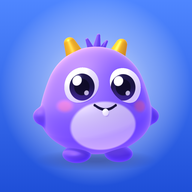

Gizlilik Politikası
Bu metin, Matematik Canavarı uygulamasının hangi bilgileri neden kullandığını, kimlerle paylaştığını ve bu bilgilerin nasıl silinebileceğini açıklar.
Kısaca
- ✅ Çocuğunuzun seçtiği hazır karakter adı, oyun sonuçları, rütbe ve madalyaları, arkadaş listesi saklanır.
- ❌ Gerçek ad, e-posta, telefon numarası, konum, fotoğraf, ses ve rehber istenmez. Uygulamada serbest yazı alanı yoktur; ad ve mesajlar hazır listeden seçilir.
- ❌ Reklam yoktur. Reklam kimliği kullanılmaz, veriler satılmaz, davranış analizi ve izleme aracı kullanılmaz.
- 🗑 Bütün veriler uygulama içinden Ayarlar → Verilerimi sil ile ya da bu sayfadan talep edilerek silinebilir.
1. Veri sorumlusu
Matematik Canavarı, [VERİ SORUMLUSU ADI SOYADI] tarafından geliştirilmektedir. Kişisel verilerin korunmasıyla ilgili her türlü soru ve talep için:
- E-posta: [İLETİŞİM E-POSTASI]
- Yazışma adresi: [YAZIŞMA ADRESİ]
2. Uygulama kimler için?
Matematik Canavarı, ilkokul çağındaki çocukların (6–12 yaş) dört işlem pratiği yapması için tasarlanmış bir eğitim oyunudur. Uygulamayı çocuklar kullanır; bu nedenle bu metin öncelikle velilere ve öğretmenlere yöneliktir. Uygulamanın ilk açılışında çocuğun anlayabileceği dilde kısa bir bilgilendirme gösterilir ve bu metne bağlantı verilir.
3. Hangi bilgileri, neden saklıyoruz?
| Bilgi | Neden | Nerede | Ne kadar süre |
|---|---|---|---|
| Cihaz hesabı: uygulamanın kendiliğinden oluşturduğu rastgele kimlik ve parola (gerçek bir e-posta adresi değildir) | Bulut özelliklerinin (yedek, arkadaşlar, rekorlar) yalnızca hesabın sahibi tarafından değiştirilebilmesi | Google Firebase Authentication | Hesap silinene kadar |
| Oyun adı: hazır listeden seçilen karakter adı (ör. "🦊 Kurnaz Tilki #482") | Oyuncunun oyunda ve listelerde görünmesi; aynı adın iki kişide olmaması | Google Cloud Firestore (Avrupa) | Hesap silinene kadar |
| Oyun ilerlemesi: oyun ve pratik sonuçları, rekorlar, rütbe, madalyalar, kapışma geçmişi, ayarlar | İlerlemenin kaybolmaması (yedek) ve aynı hesabın başka cihazda açılabilmesi | Telefonun kendisi ve Firestore (yedek) | Hesap silinene kadar |
| Rekor tablosu satırı: oyun adı, puan, rütbe, oyuncu kodu | Rekorlar tablosunun gösterilmesi | Firestore (diğer oyunculara açık) | Hesap silinene kadar |
| Oyuncu kodu: 7 harflik rastgele kod | Arkadaş ekleme ve oyuncu kartının açılması | Firestore | Hesap silinene kadar |
| Arkadaşlık bilgileri: arkadaş listesi, arkadaşlık istekleri, oyun davetleri, hazır mesajlar, takım üyeliği, zamanlı oyun randevuları | Arkadaşlarla oynama özelliklerinin çalışması | Firestore | Arkadaşlık sürdükçe; davetler 10 dakika, randevular oyun saatinden 15 dakika sonrasına kadar geçerlidir |
| Çevrim içi durumu: uygulamanın en son ne zaman açık olduğu | Arkadaşların birbirini oyuna çağırabilmesi | Firestore | Hesap silinene kadar (her açılışta güncellenir) |
| Oyun odası kayıtları: yarış ve kapışma sırasında puan, kalan can, cevap süreleri | Çok oyunculu oyunun yürütülmesi | Firestore | Geçicidir; oda 24 saat sonra geçersiz olur, kayıt aynı oda kodu yeniden kullanıldığında silinir |
| Hesap kodu: 10 harflik gizli kod | Aynı hesabın başka bir cihazda açılması | Firestore | Hesap silinene kadar |
| Bildirim adresi: yalnızca bildirimler açılırsa, telefonun bildirim servisinin verdiği adres | Oyun daveti ve randevu hatırlatması gönderilmesi | Firestore; hatırlatmalar için Cloudflare | Bildirim kapatılana ya da hesap silinene kadar; Cloudflare'daki hatırlatma kaydı en geç birkaç saat içinde kendiliğinden silinir |
Bunlara ek olarak, uygulama internete bağlandığında hizmet sağlayıcıların sunucuları bağlantının kurulabilmesi için cihazın IP adresini teknik olarak işler. Bu bilgi tarafımızca saklanmaz ve kullanılmaz.
4. Hangi bilgileri toplamıyoruz?
- Gerçek ad ve soyad, doğum tarihi, e-posta adresi, telefon numarası
- Konum, fotoğraf, video, ses kaydı, rehber
- Reklam kimliği ve benzeri cihaz tanımlayıcıları
- Serbest yazı: uygulamada çocukların yazı yazabileceği bir alan yoktur. Adlar, takım adları ve mesajlar hazır listelerden seçilir.
5. Bilgileri kimler görür?
Diğer oyuncular
- Herkes: rekorlar tablosundaki oyun adı, puan ve rütbe; oyuncu kartındaki rütbe, madalyalar ve oyun istatistikleri.
- Sadece arkadaşlar: çevrim içi durumu, gönderilen hazır mesajlar ve davetler.
- Aynı oyun odasındakiler: oyun adı ve o oyundaki puanlar.
Hizmet sağlayıcılar
Uygulamanın çalışması için aşağıdaki hizmetler kullanılır. Bu şirketler verileri yalnızca hizmeti sunmak için işler.
- Google Firebase (Authentication ve Cloud Firestore, sunucu konumu Avrupa): hesap, oyun verileri ve arkadaşlık bilgileri. Firebase gizlilik bilgileri
- Cloudflare (Workers): oyun davetleri ve randevu hatırlatmaları için bildirim gönderimi. Cloudflare gizlilik politikası
- GitHub Pages: uygulama dosyalarının barındırılması. GitHub gizlilik bildirimi
Veriler hiçbir şekilde satılmaz, reklam amacıyla kullanılmaz ve bu hizmetler dışında kimseyle paylaşılmaz. Yasal bir zorunluluk olması hâlinde yetkili kurumlara bilgi verilebilir.
6. Çocukların güvenliği
- Çocuklar gerçek adlarını yazamaz; ad hazır karakter listesinden seçilir. Listede takılmaya ya da alaya açık adlar bulunmaz.
- Oyuncular birbirine yalnızca hazır mesajlar (ör. "Hadi oynayalım!", emojiler) gönderebilir; serbest sohbet yoktur.
- Arkadaşlık karşılıklı onayla kurulur. Bir oyuncu istenmezse 🚫 Engelle ile arkadaşlıktan çıkarılır ve bir daha istek, davet ya da mesaj gönderemez.
- Uygulamada reklam, uygulama içi satın alma ve başka sitelere yönlendiren bağlantı yoktur.
7. Saklama süresi ve silme
Bilgiler, tabloda yazan süreler boyunca ve hesap silinene kadar saklanır. Hesap ve bütün bulut verileri iki yolla silinebilir:
- Uygulamada Ayarlar (⚙️) → 🗑 Verilerimi sil. Silme hemen gerçekleşir.
- Hesap ve veri silme sayfasındaki adımlarla e-posta ile talep. Talep en geç 30 gün içinde yerine getirilir.
Uygulamayı telefondan kaldırmak telefondaki verileri siler, ancak buluttaki yedeği silmez.
8. Güvenlik
- Uygulama ile sunucular arasındaki bütün bağlantılar şifrelidir (HTTPS).
- Bulut verilerine erişim kurallarla sınırlandırılmıştır: her oyuncu yalnızca kendi verisini değiştirebilir, gizli bilgiler başkaları tarafından okunamaz.
- Hesap kodu hesabı başka cihazda açmaya yarar; bu kodun kimseyle paylaşılmaması gerekir. Uygulama bu konuda kullanıcıyı uyarır.
9. Haklarınız
Veliler, çocukları adına verilerine erişme, düzeltilmesini ya da silinmesini isteme ve diğer yasal haklarını kullanabilir. Ayrıntılar ve başvuru yolu KVKK Aydınlatma Metni'ndedir.
10. Değişiklikler
Bu politika değişirse yeni metin bu sayfada yayımlanır ve yukarıdaki "Son güncelleme" tarihi değişir. Önemli değişiklikler uygulama içinde de duyurulur.
11. İletişim
Sorularınız için: [İLETİŞİM E-POSTASI]